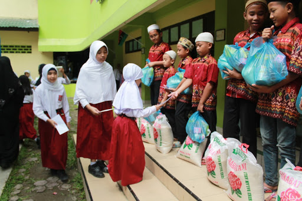

BERITA UTAMA
Sehat Peduli Sehat Berbagi
Sehat Peduli, Sehat Berbagi pada bulan Ramadhan tahun ini berbeda dengan bulan Ramadhan yang lalu. Jika biasanya Soehat berbagi dengan mengunjungi panti asuhan, akan tetapi tahun ini Soehat berkoordinasi dengan Muhammadiyah Covid-19 Command Center (MCCC) Lampung Utara, berbagi dengan fakir miskin dan beberapa orang yang terkena dampak dari Covid 19. Berbagi kepada sesama, memberikan sebagian rezeki kepada saudara-saudara kita yang membutuhkan.
Info lowongan pekerjaan guru olahraga di SD N 1 KARANGBANJAR tahun ajaran 2019/2020
Setelah dilakukan pengecekan dan validasi terhadap berkas lamaran yang masuk, Panitia Penerimaan Guru SDS Soekarno Hatta Kotabumi Tahun Pelajaran 2020/2021 akhirnya memutuskan bahwa terdapat 70 peserta yang lulus pada tahap seleksi berkas (seleksi tahap 1).
Senin, 3 Februari 2020 Ananda kelas 1 SD N 1 KARANGBANJAR melakukan kegiatan tes rapid. Kegiatan tersebut merupakan program dari Puskesmas Kotabumi II. Dalam kegiatan tersebut anada mendapatkan pengetahuan tentang cara menyikat gigi yang benar.
Alhamdulillah prestasi lagi dari siswa siswi SD N 1 KARANGBANJAR dalam ajang kejuaraan pencak silat Tingkat Nasional-Internasional Lampung Berjaya Open 2019 yang diselenggarakan di PKOR Way Halim. Prestasi ini diraih saat mereka sedang libur semester.

Dengan ini diumumkan bahwa dari hasil Tes Potensi Akademik Umum (TPAU), micro-teaching, dan wawancara diterima 12 (dua belas) orang sebagai pendidik di SDS Soekarno Hatta Kotabumi TP 2020/2021.
Paket liburan SD di kampung inggris bandung PROSES BELAJAR INTENSIF bahasa inggris melalui konsep langsung penerapan dalam kehidupan sehari-hari.